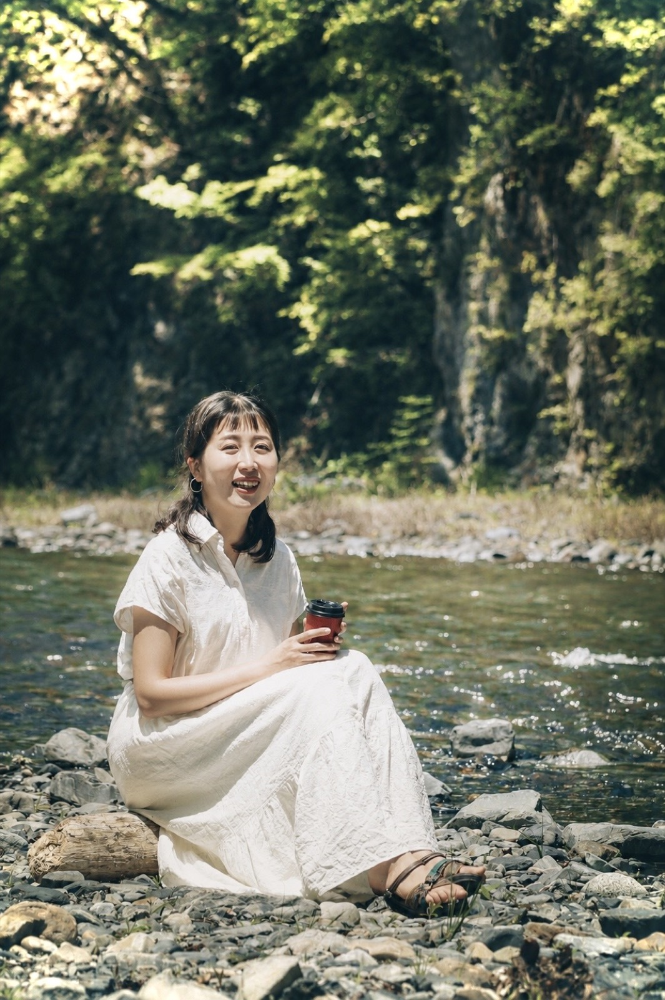
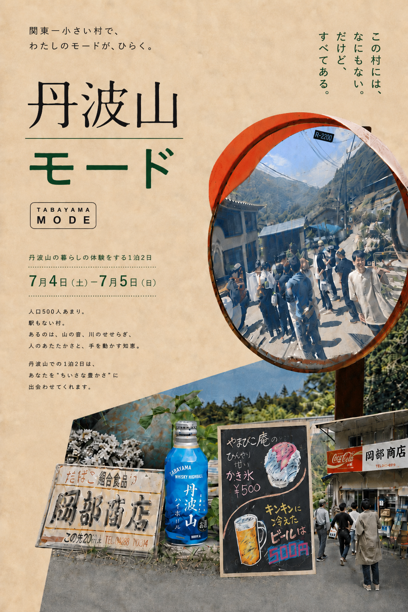
関東一小さい村の暮らしを体験する、
1泊2日
村の97%が自然、人はわずか3%。
国立公園に属す、人口500人あまりの村です。スーパーもなく、少しだけ文明から切り離された場所。
けれど、足りないものは物々交換で、すれ違えば立ち話が始まる。だからこの村は、どうやっても孤独になりようがない。
そんな丹波山村の、いつも通りの暮らしに身を置く2日間です。
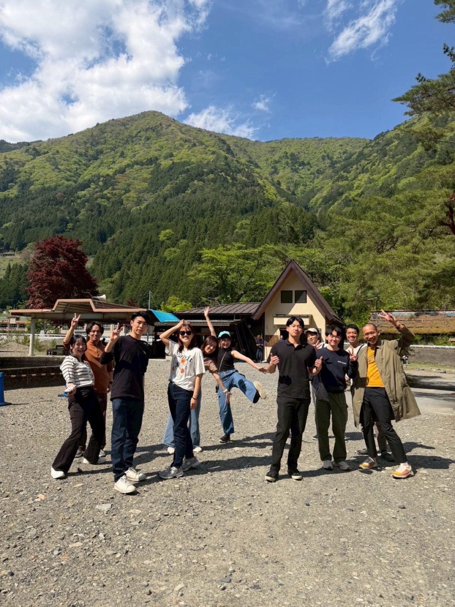
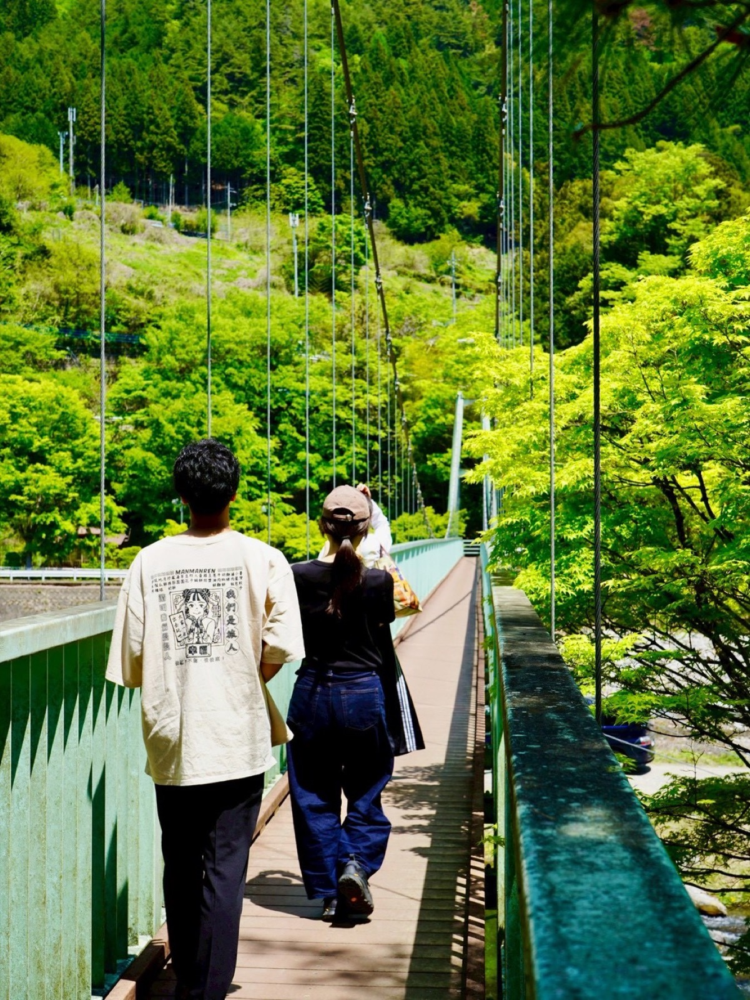
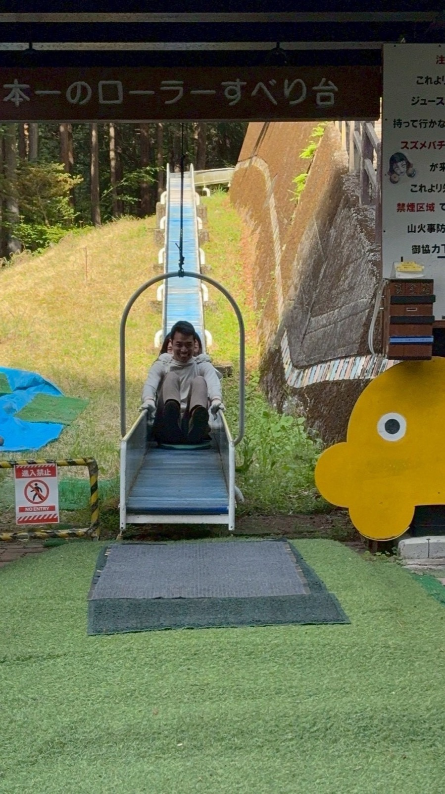
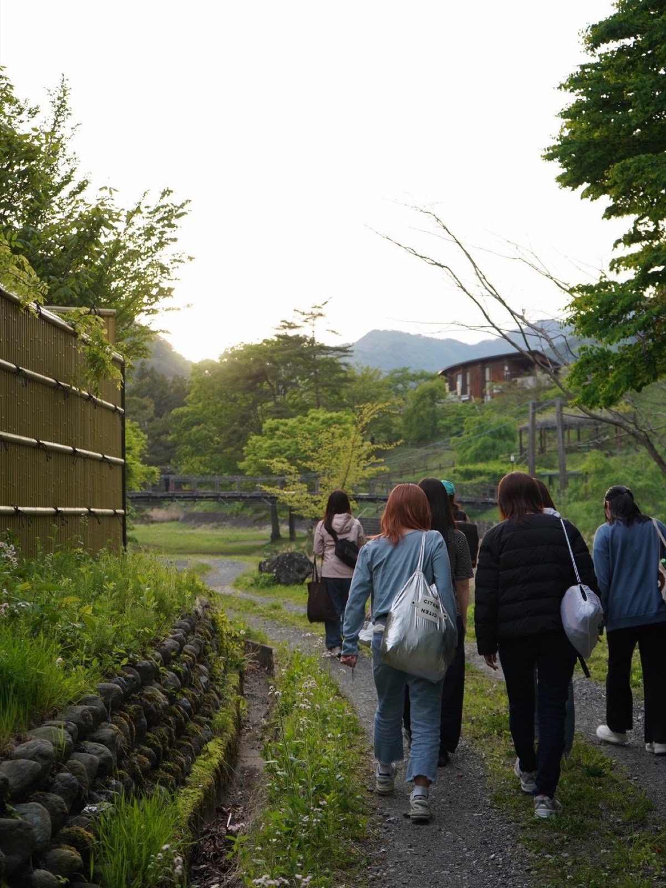
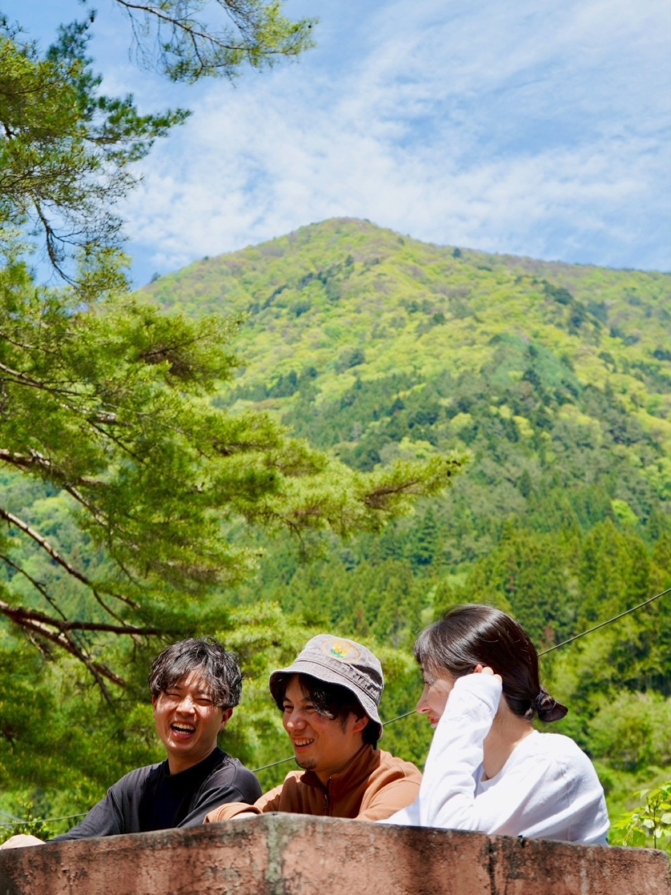
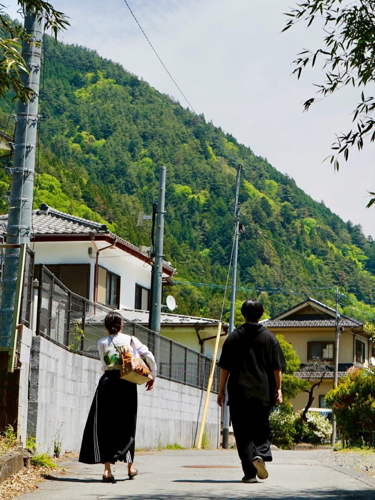
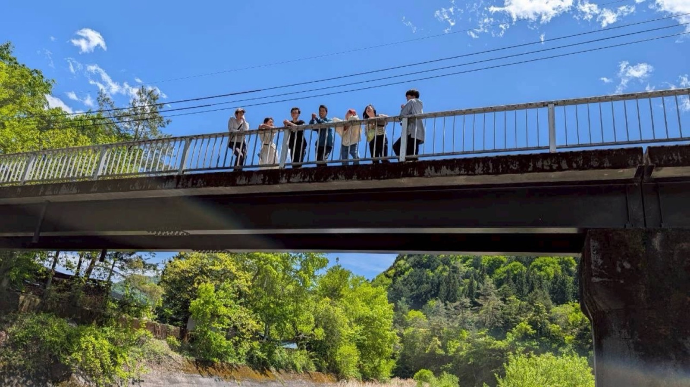
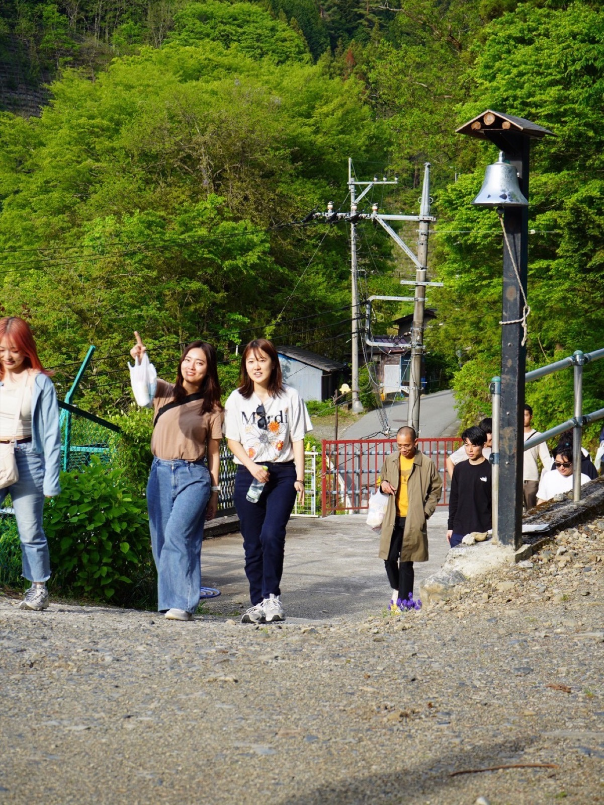
村のリズムに合わせて過ごす2日間。ゆっくりとした時間で余白と対話を楽しみます。
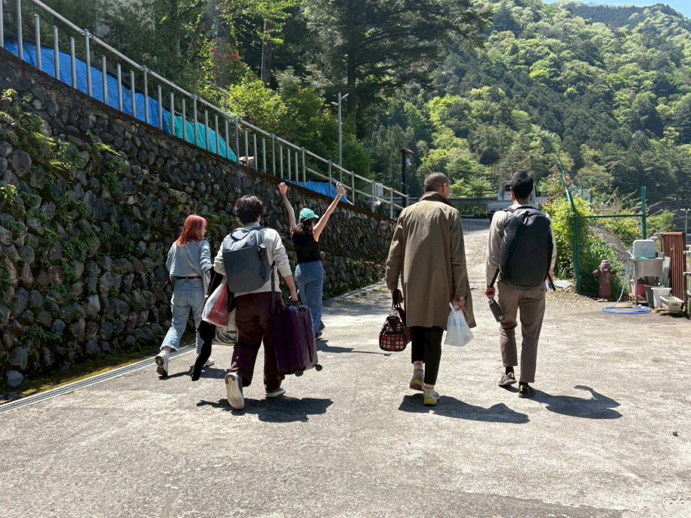
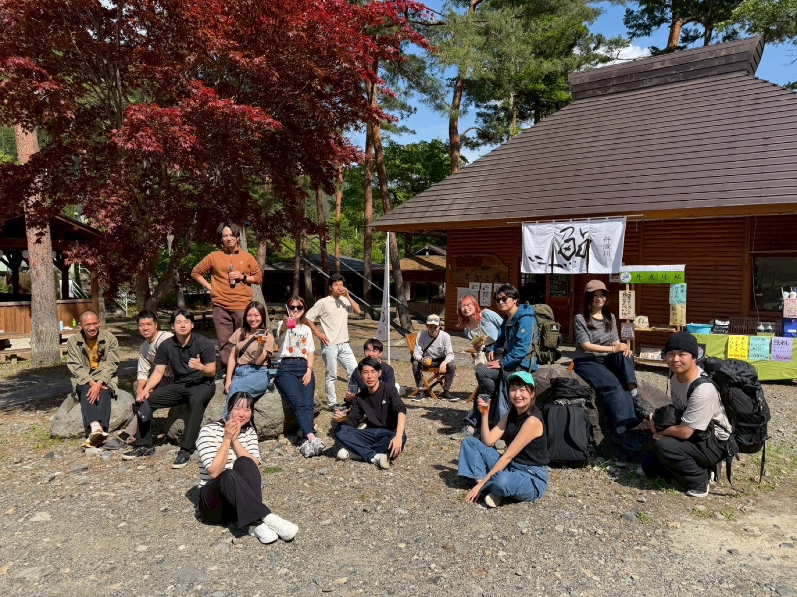
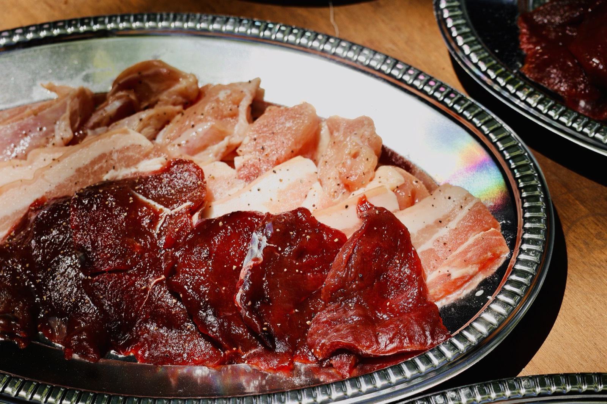
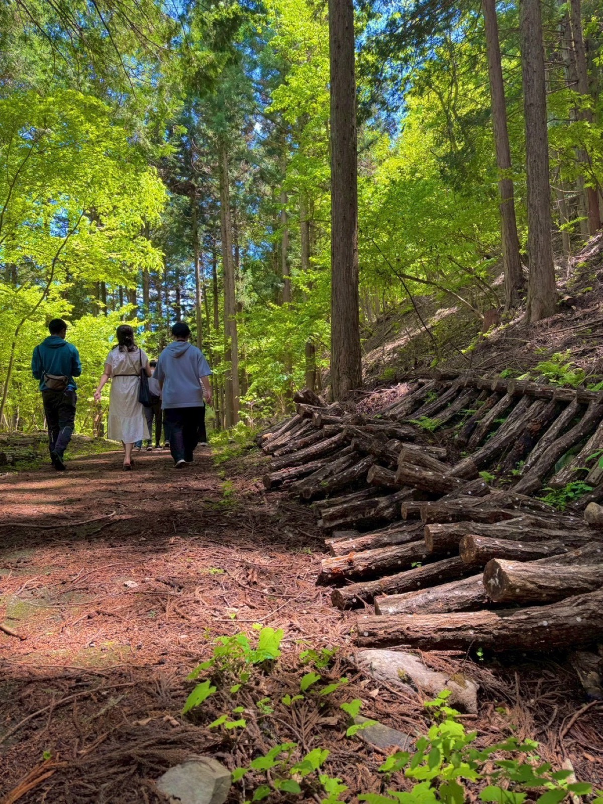
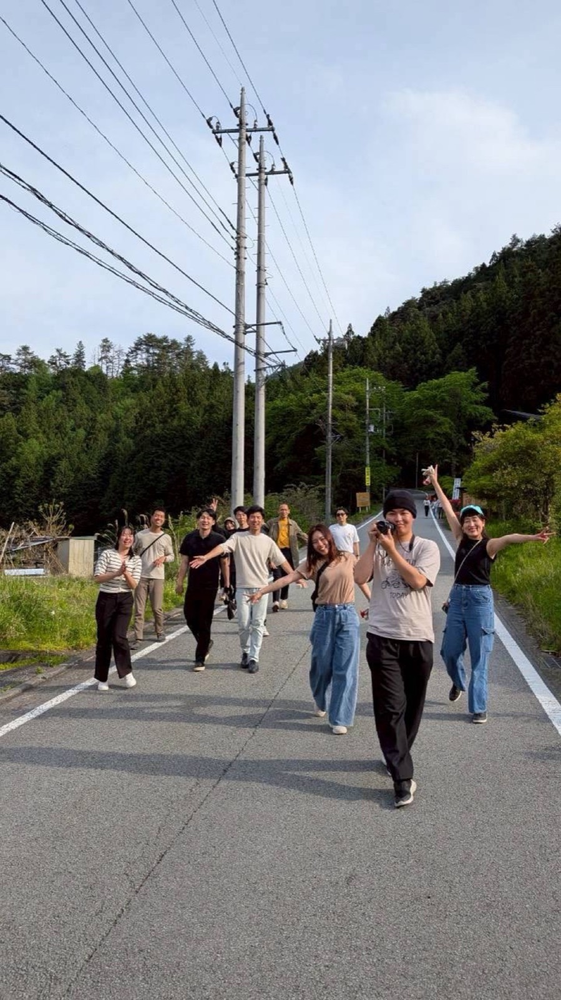
※ スケジュールは天候や現地の状況により変更になる場合があります。

北海道江別市出身。移住先を探して日本中を巡るなかでこの村に一目惚れし、2025年10月、紅葉の始まる季節に丹波山村へ移住しました。
移住前は京都で、芸舞妓さんの日英通訳や茶道体験施設の講師、食べ歩きツアーのガイドを経験。村への想いから、旅企画「たばたび」を立ち上げました。
2025年10月の終わり、紅葉の始まる季節に私は丹波山村に移住しました。移住先を探して日本中を巡る中、この村に「一目惚れ」してしまいました。
道ですれ違う人と「最近どう？」と立ち話から始まる朝。農業をやってみたいと言ったら、畑を貸して応援してくれる人がいた。そのお礼を持っていけば、むしろご馳走になってしまう。
春は山菜を摘んで、夏は川で涼み、秋は実りを収め、冬は猟に出る。丹波山村の、いつも通りの暮らし。私にとっては、その暮らしがとても豊かに感じました。
この村に足を運んでくれた方にも、その豊かさを感じてほしい。また会いたい人、もう一度見たい景色に出会ってほしい。「私にとっての豊かさってなんだろう？」と問うてほしい。明日にワクワクして、希望を抱きいつもの場所へ帰っていく姿を見送りたい。
そして、また季節が巡ったら、「ただいま」って帰ってくるのを、「おかえり」と迎え入れて、いろんな旅の話を聞きたい。そんな想いで「たばたび」を立ち上げました。いつでも、ただいまと言いに来てください。
関東一小さい村で、
あなたの「ちいさな豊かさ」に、出会いにいく旅へ。